Giorno 9 di 15 · Venerdì 11 dicembre · Tokyo
Yanaka, Kappabashi e Akihabara di venerdì
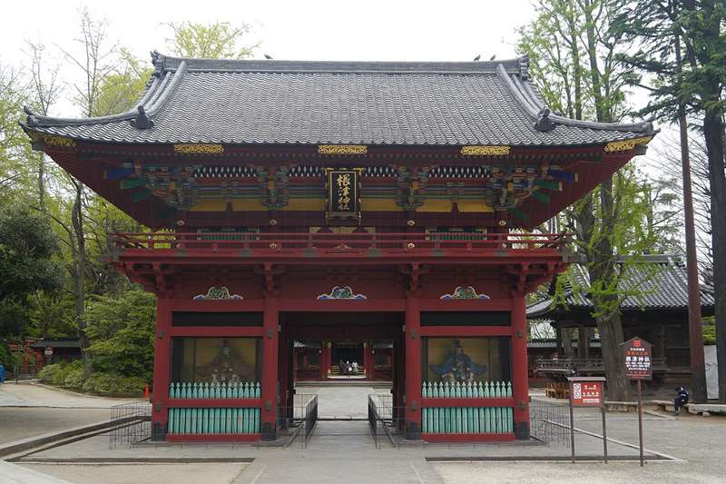
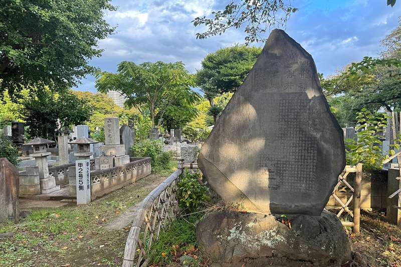
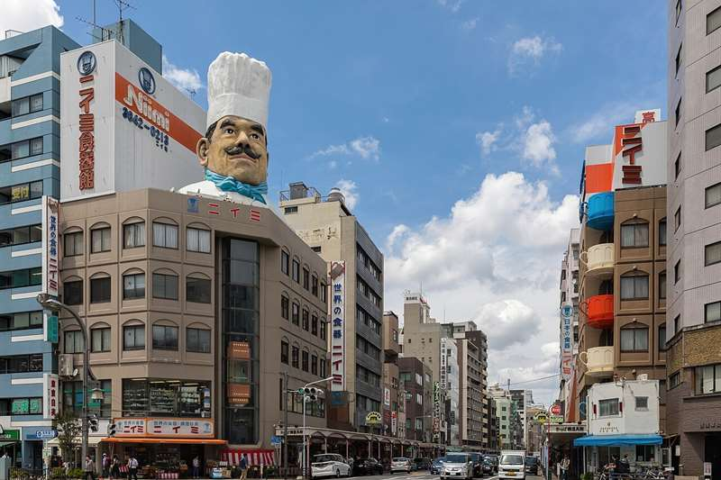
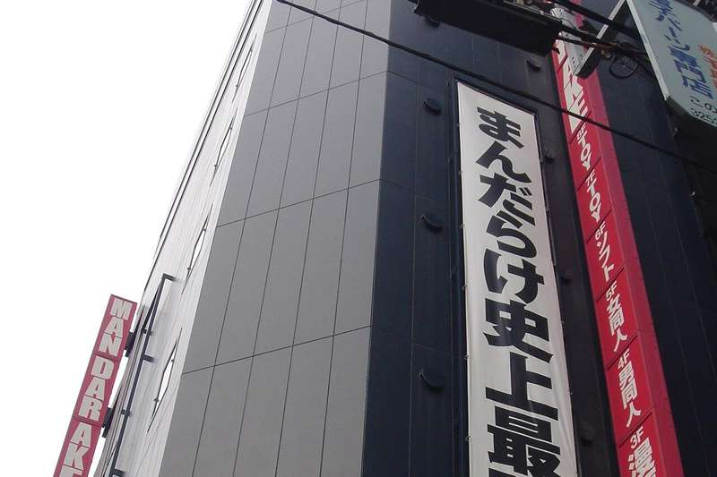
In sintesi
- Mattina Yanaka e il santuario di Nezu: la Tokyo vecchia, senza pullman.
- Pomeriggio Yamashiroya, Kappabashi e la prima metà di Akihabara, con i negozi vuoti del venerdì.
- Sera la cotoletta di Ponta Honke, dal 1905.
Itinerario
- 08:30Colazione da Shinpachi Shokudo, o al buffet dell'APA (vedi sotto).
- 09:15Verso Yanaka — un quarto d'ora a piedi fino a Shinjuku Station e la Yamanote fino a Nishi-Nippori, una ventina di minuti sul lato nord dell'anello.
- 10:05Yanaka Ginza e lo Yuyake Dandan — si entra dall'alto, dalla scalinata del "tramonto a gradini", e sotto c'è una via di negozi di quartiere lunga meno di duecento metri: macellerie che friggono crocchette, pasticcerie di senbei, botteghe di cestini, e gatti di legno sui tetti. Yanaka è uno dei pochi quartieri di Tokyo sopravvissuti sia al terremoto del 1923 sia ai bombardamenti del 1945, ed è per questo che le case sono ancora di legno e le strade ancora storte. A quest'ora i negozi stanno aprendo e ci sono solo le signore che fanno la spesa.
- 10:30I templi e il cimitero di Yanaka — dietro la via ci sono decine di piccoli templi, uno attaccato all'altro, e il grande cimitero di Yanaka con i viali di ciliegi spogli. Qui è sepolto Tokugawa Yoshinobu, l'ultimo shogun, quello che nel 1867 restituì il potere all'imperatore. Nessun biglietto, nessuna folla: è il quartiere dei templi che Tokyo ha e che quasi nessuno visita.
- 11:15Nezu Jinja — un quarto d'ora a piedi verso sud. Il santuario è del 1706, laccato di rosso e oro, e i suoi edifici sono beni culturali importanti, sopravvissuti anche loro alla guerra. Sul fianco della collina corre un tunnel di piccoli torii vermigli, il santuario di Otome Inari: una Fushimi Inari in miniatura, in cinque minuti e senza nessuno. Gratis.
- 11:35Nezu no Taiyaki — cinque minuti a piedi, il taiyaki del quartiere (vedi sotto): si vende in fretta, meglio prenderlo adesso che dopo pranzo.
- 11:50Pranzo da Kamachiku — otto minuti a piedi da Nezu Jinja: udon in un magazzino di mattoni del 1910 (vedi sotto). Apre alle 11:30: si arriva poco dopo l'apertura, prima che si formi la fila.
- 12:45Verso Ueno — venti minuti a piedi lungo lo stagno Shinobazu.
- 13:10Yamashiroya — davanti all'uscita Hirokoji della stazione di Ueno: sei piani stretti di giocattoli, model kit, figure e LEGO, dal seminterrato al tetto. È uno dei pochi negozi di Tokyo dove il LEGO capita davvero in offerta, e il piano dei Gunpla e delle figure ha prezzi da negozio di quartiere, non da Akihabara.
- 14:00Kappabashi Dougu-gai — due fermate di metro Ginza da Ueno a Tawaramachi, e siete nella "via degli utensili": 170 negozi che riforniscono i ristoranti di mezza Tokyo. Coltelli forgiati a mano che vi affilano e incidono col vostro nome mentre aspettate, pentole, stampi, teiere di ghisa, e i negozi del cibo di plastica delle vetrine, dove si comprano anche i singoli pezzi. È una strada di lavoro vera, non un mercato per turisti, e nessuno vi verrà a vendere niente.
- 15:15Tawaramachi → Suehirocho — quattro fermate di metro Ginza, e siete all'estremo nord di Akihabara.
- 15:30Akihabara, prima parte i negozi grossi, con calma — oggi solo i due posti che chiedono più tempo, così domenica non vanno fatti di corsa. Mandarake Complex, oggi in due palazzi uno di fronte all'altro: nel Complex originale figure, giocattoli vintage e manga d'epoca; nel Complex 2, aperto ad agosto 2025 a dieci secondi a piedi, i giochi al 3° piano e CD e DVD al 4° e 5°. Tutti e due 12-20. Poi Surugaya, con i cesti di figure senza scatola e i giochi sciolti a 100-500 yen. Di venerdì pomeriggio fra gli scaffali si passa, e alla cassa non c'è la fila della domenica.
- 18:45A piedi verso Okachimachi — dieci minuti verso nord sotto i binari.
- 19:00Cena da Ponta Honke — la cotoletta dal 1905, nel quartiere dove il tonkatsu è diventato quello che è (vedi sotto). Ultimo ordine alle 19:45: non tardate. Da qui la metro Oedo, dalla stazione di Ueno-okachimachi, vi riporta diretti a Higashi-Shinjuku.
Le tappe su Google Maps
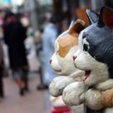
Yanaka Ginza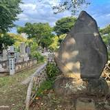
Cimitero di Yanaka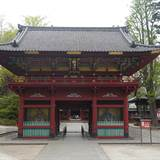
Nezu Jinja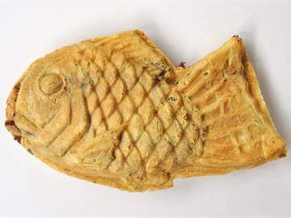
Nezu no Taiyaki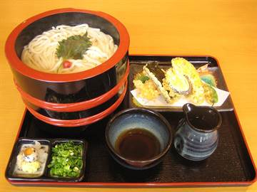
Kamachiku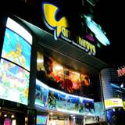
Yamashiroya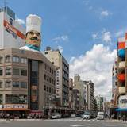
Kappabashi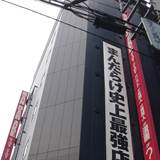
Mandarake Complex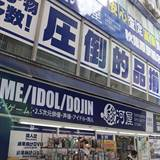
Surugaya Akihabara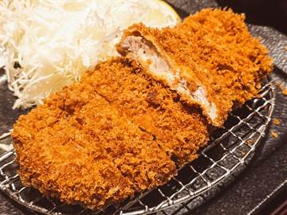
Ponta Honke
Toccate una tappa e si apre in Google Maps: da lì Indicazioni vi dice treno e binario partendo da dove siete.
La mappa si carica solo se la toccate, per non consumare dati: il tracciato è a piedi; dove l'itinerario dice treno o metro, prendete quelli.
Dove mangiare
- ColazioneShinpachi Shokudo (しんぱち食堂 西武新宿店), Kabukicho 1-26-3, dentro il quartiere a dieci minuti a piedi — quasi aperto 24 ore: colazione giapponese vera, pesce alla brace (salmone, sgombro, sardina), riso, zuppa di miso e sottaceti, sui 550-650 yen. Quindici posti al banco, contanti o pagamento con QR. Se preferite il pane, a cinque minuti da Higashi-Shinjuku c'è Pan-ya no Donsuke (パン家のどん助, oggi DONSUKE BAKERY), fra i cento migliori panifici di Tabelog: dalle 7:30 finché c'è pane (oggi è aperto), solo da asporto e in contanti. Il buffet dell'APA (2.200-2.400 yen, vedi Pratica) resta il ripiego per chi vuole stare sotto casa.
- Spuntino
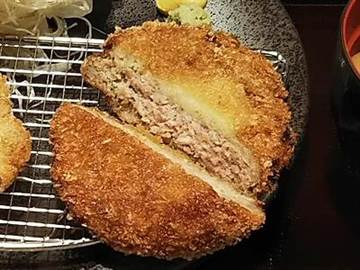
lungo Yanaka Ginza: le crocchette e le menchi-katsu fritte al momento dalle macellerie della via, da mangiare fermi davanti al banco. - Il taiyakiNezu no Taiyaki (根津のたいやき), Nezu 1-23-9, cinque minuti da Nezu Jinja — ex Yanagiya, dal 1957: il classico taiyaki, il dolce a forma di pesce ripieno di pasta di fagioli rossi, ma cotto uno alla volta nello stampo di ghisa (ippiki-yaki, il "pesce naturale") invece che a stampo multiplo. Pastella sottile, croccante fuori, l'anko fatto in casa cotto dalla mattina. Sui 230-250 yen l'uno; apre alle 10, è chiuso sabato, domenica e festivi e ogni tanto chiude senza preavviso (lo annuncia su X, @taiyaki_nezu: controllate la mattina); il titolare lavora da solo e finisce spesso la scorta per le 13-14, quindi si prende subito dopo il santuario, non dopo pranzo.
- PranzoNezu Kamachiku (根津 釜竹), a otto minuti da Nezu Jinja: udon in stile Osaka-Sanuki dentro un magazzino di pietra e mattoni del 1910, ristrutturato dall'architetto Kuma Kengo. Fanno due cose, kamaage udon (caldi, dalla pentola, da intingere) e zaru udon (freddi), sui 1.200 yen: per un pasto pieno se ne prendono due porzioni o una a testa più gli antipasti. Venerdì 11:30-15:00, finché ci sono gli udon; non si prenota, carte accettate. Stasera c'è il tonkatsu, quindi a pranzo niente fritto.
- CenaPonta Honke (ぽん多本家), Ueno 3-23-3, a due minuti dall'uscita sud di Okachimachi — dal 1905, è uno dei locali che si contendono l'invenzione del tonkatsu: la katsuretsu di lonza fritta a bassa temperatura nello strutto, dorata chiara e morbidissima, con il riso, la zuppa di miso e i sottaceti. Sui 3.500-4.500 yen il set. Martedì-sabato 16:30-20:20 (ultimo ordine alle 19:45), chiuso il lunedì; ventiquattro posti, si prenota da due persone (numero del locale 03-3831-2351; quello di Gurunavi è 050-5492-8353: fatelo chiamare dall'hotel). Horaiya (蓬莱屋), l'altro nome storico a un minuto da qui, famoso per l'hirekatsu di filetto, dal 2024 nei giorni feriali apre solo a pranzo: la sera fa servizio solo nel weekend e nei festivi.
Note e dritte
La logica della giornata: il Tokyo shitamachi, la città bassa, preso dal lato che non conoscete. Yanaka, Nezu, Ueno, Kappabashi e Akihabara stanno tutti nel quadrante nord-est, collegati da passeggiate e da tratte di metro di cinque minuti. Si comincia nei vicoli dove Tokyo è ancora di legno e si finisce nei palazzi di Akihabara, con la cena a dieci minuti dall'ultimo negozio.
Perché niente Asakusa. Nel 2025 avevate l'hotel ad Asakusa per quattro notti: Senso-ji, la Kaminarimon e Nakamise li avete visti più volte, e rifarli all'alba non aggiungerebbe niente. Yanaka è la stessa Tokyo di templi e botteghe, ma vera e senza la folla. Kappabashi resta, perché cucinate: ci si arriva da Ueno invece che da Asakusa, e Senso-ji rimane a dieci minuti senza doverci passare.
Akihabara in due tempi. Nel 2025 Akihabara era la vostra giornata libera, fatta di corsa. Stavolta ha due mezze giornate. Oggi, di venerdì, i due posti grossi che chiedono ore: Mandarake Complex e Surugaya. Domenica, al Giorno 11, la strada pedonale e il resto del giro, dal più caro al più economico. Così in nessuno dei due giorni Mandarake, oggi su due palazzi, va fatto in quarantacinque minuti.
Il coltello di Kappabashi: santoku o gyuto, dai 6.000 yen in su per uno onesto, molto di più per uno forgiato a mano, e ve lo affilano e incidono sul posto. Occhio solo al rientro: in aereo va in stiva, mai nel bagaglio a mano.
Se oggi non gira. Si taglia una metà Oggi niente è prenotato e niente esiste solo oggi, ma non tutto torna. Se mollate la mattina, Yanaka e Nezu si perdono: nel resto del viaggio non ci sono. Uscite con calma e andate diretti a pranzo da Kamachiku per le 11:40 (da Higashi-Shinjuku, Google Maps vi dà il percorso), poi si riparte da Yamashiroya alle 13:10 come scritto. Se mollate il pomeriggio, Mandarake Complex e Surugaya passano a domenica, al Giorno 11, al posto di Sofmap, Janpara e Iosys; Yamashiroya e Kappabashi invece non tornano, e con Kappabashi il coltello. La cena da Ponta Honke tenetela: dall'hotel la Oedo va diretta a Ueno-okachimachi in una ventina di minuti, e l'ultimo ordine è alle 19:45.